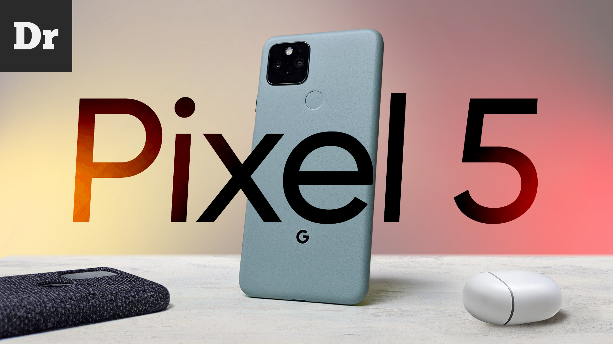
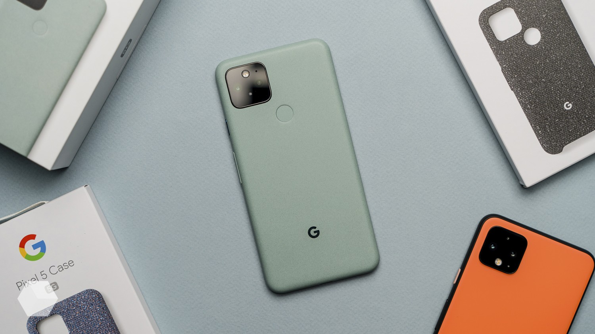

Pixel 5
В 2020 году Pixel испытывает сложности, так как спрос на такие аппараты резко упал, поддерживает их только американский рынок и небольшое число фанатов по всему миру. Официально Pixel продается в 15 странах мира, ни в одной из них аппараты этой линейки не занимают заметной доли рынка. Достаточно отметить, что Pixel не входит в десятку производителей смартфонов в мире, это очень нишевые устройства. Причина непопулярности в том, что предыдущие модели имели целый ряд аппаратных изъянов, врожденных проблем и при стоимости, равной другим флагманам, явно им уступали. Светлой стороной становилась камера, которая выигрывала у прямых конкурентов и позволяла получать очень интересные снимки. Выбор Pixel всегда был компромиссом, тем более что голый Android оказался, мягко говоря, не таким удобным, как Android-смартфоны со своими оболочками.Внутри Google не могут забросить направление Pixel, но вынуждены выискивать компромиссные решения, чтобы обеспечить хотя бы минимальные продаже линейки. Поэтому Pixel 5 – это не флагман – проще чипсет, дешевле память, меньше модулей камер, чем у флагманов других компаний. Но компактный размер, и этот аппарат смело можно назвать одним из самых компактных, он напрямую выступает конкурентом для Galaxy S20, как вариант – iPhone 12 mini. Мне целевая аудитория этой модели видится так: лояльные покупатели предыдущих моделей Pixel, которые не разочаровались в этой линейке. Те, кто ищет очень хорошее качество основного модуля камеры, например, хочет без проблем снимать детей в движении. Также этот аппарат стоит рассмотреть всем, кто ищет компактный, но достаточно производительный смартфон.
ХАРАКТЕРИСТИКИ
В качестве основного датчика камеры Pixel 5 используется Sony IMX363 — сенсор четырёхлетней давности, который также стоит в Pixel 3 и Pixel 4. Несмотря на то, что его размер крохотен относительно конкурентов (1/2,25” против 1/1,33” у Galaxy S20 Ultra), программная магия Google позволяет ему держаться в топ-лиге.А вот второй сенсор изменился: теперь это не телеобъектив, а сверхширокоугольный с углом захвата 107 градусов. В Google решили, что худо-бедно с приближением справится программный Super Res Zoom, а вот панорамного эффекта софтом не добиться. Сенсор имеет разрешение 16 Мп. А теперь о дисплее. Он просто хорош: абсолютно плоская OLED-матрица поддерживает частоту обновления 90 Гц и технологию HDR10+, а защищает её закалённое стекло Gorilla Glass 6. Покупатель Pixel 5 обрекает себя на невозможность похвастаться в комментариях результатами тестирования своего гаджета в AnTuTu Benchmark. Ну и ладно: Snapdragon 765G от Qualcomm хоть и не является рекордсменом, предлагает достойную производительность. Вместе с чипсетом Snapdragon 765G и дисплеем на 90 Гц система работает быстро и плавно, придраться не к чему.
ОБЗОРЫ